Sun Web Application Guidelines - Version 4.1
Sun Web Application Guidelines - Version 4.1
|
|
|
How To Use These Guidelines - An Introduction
10.1.2 Their Role in System Management Applications
10.2 Challenges in Designing Topologies
10.2.1 Handling Scale Gracefully
10.2.3 Achieving a Sun-Wide Common Look-and-Feel
10.2.4 Dealing With the Limitations of Web Browsers
10.2.5 Facilitating Positive Transfer Across Different Representation Types
10.2.6 Integrating Into System Management Applications
10.2.7 Supporting Accessibility for Users with Disabilities
10.3 Choosing a Topology Representation
10.3.1 Attributes of Topologies
10.3.1.1 Primary Attributes (Number of Tiers and Number of Objects per Tier)
10.3.1.2 Secondary Attributes (Connectivity and Multipathed Topologies)
10.3.2 Guidelines for Choosing a Topology Representation
10.3.2.1 Guidelines for One-Tier Topologies
10.3.2.2 Guidelines for Two-Tier Topologies
10.3.2.3 Guidelines for Topologies With Three or More Tiers
10.3.2.4 Guidelines for Representing Within-Tier Connections
10.4.1 Showing Topology Objects
10.4.2 Showing Topology Connections
10.4.4 Showing Directed Relationships
10.4.6 Showing Aggregate Objects
10.4.7 Showing Aggregate Connections
10.4.10 Showing Sub-Components
10.5 Layout Guidelines for Topologies
10.5.1 General Layout Guidelines
10.5.2 Layout Guidelines for Small-Scale Topologies
10.5.3 Layout Guidelines for Moderate Scale Topologies
10.5.4 Display Guidelines for Large Scale Topologies
10.6.1 Mouse-Over Feedback and Tool Tips
10.6.2 Object Selection Behavior
10.6.5 Expanding and Collapsing Aggregates
10.7 Methods for Integration with Primary Navigation
10.7.1 Showing Connectivity for a Selected Object
10.7.2 Showing Paths from a Selected Object
10.8 Issues for Future Investigation
IMPORTANT NOTE :
Additional design work is planned for topology before a new tag supporting it in the current component set is created.
This chapter provides guidelines for graphical representations that illustrate relationships between managed objects. These graphical representations are often called topology views. These guidelines cover only a small part of the overall design space. However, Sun system management applications that display topologies most often use this small part.
Here is a working definition for "topology view":
The following items clarify the meaning of a topology view as it relates to Sun system management applications:
Topology views are unique in their ability to provide system administrators with a graphical representation that helps them understand the relationships between objects. In a scenario in which a specific system fault generates many alarms, an experienced system administrator can see a dozen or so alarms and easily identify the problem. However, a less experienced system administrator might need to see a topology view showing the health of various managed objects. The system administrator might need to examine the interrelationships between healthy and unhealthy objects to isolate the existing problem.
Design efforts to date have focused on two uses for topology views in Sun system management applications:
 Generally, topology views should not replace alternative methods of information gathering (for example, alarm logs or asset inventories) or navigation in system management applications.
Generally, topology views should not replace alternative methods of information gathering (for example, alarm logs or asset inventories) or navigation in system management applications.
User data suggests that individual differences exist in how system administrators troubleshoot problems. Differences also exist in the needs of various sizes and types of organizations. Thus, at any given time, a system administrator who is gathering information may choose from several options to collect information: alarms, asset inventory, or topology views.
One of the greatest challenges is to handle scale gracefully using elegant visualization techniques. Here are two examples of problems to avoid:
| Spaghetti Ball Effect | Small topology already suffering from scalability issues |
|---|---|
| 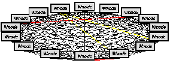 | 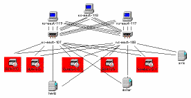 |
In the first example, detecting a pattern in the yellow and red links is virtually impossible due to the large number of connections and the crossing of links between objects. In the second example, the scale is smaller; however, this visualization method (using boxes and lines) reaches its limit at a rather low scale.
In essence, a navigation tree uses this method by allowing users to control the complexity of the screen by showing and hiding various levels of the object hierarchy. Likewise, in a topology view, the user is initially presented with upper levels of the hierarchy and can drill down through the hierarchy to access the information of interest. Examples and guidelines for aggregate objects and connections are discussed in 10.4.6 Showing Aggregate Objects and 10.4.7 Showing Aggregate Connections.
Topology views can be extremely complex. They might include:
This complexity presents challenges for all aspects of system management applications. Topology views present their own unique set of challenges that developers must overcome. Any two-dimensional view of a multidimensional space must handle unique problems such as:
Sun system management applications manage a wide variety of hardware systems and software applications. Many of these applications require the display of different types of topologies. Any set of guidelines intended to achieve a common look-and-feel must support a range of topologies that incorporate different sets of objects with possibly different kinds of relationships. Perhaps more importantly, these guidelines must also consider that different applications emphasize different user tasks. Because of this wide variety of different needs across Sun, these topology guidelines must help developers choose from a set of acceptable representations.
Web browsers present a unique set of challenges for displaying topology views. Strong conventions exist for navigation and drill-down techniques using hyperlinked elements. However, support for interactivity (for example, contextual menus and multiple selection) is relatively weak.
Of course, performance is another consideration, as it should not take a long time to download and display topology views.
Customer sites are often diverse and changing. At some sites, one user might be required to manage a variety of different systems and applications. For example, this user might manage the storage associated with a very large archival database as well as the file systems for the engineers utilizing that database. In addition, many sites grow over time. So, a user must be able to move seamlessly between views of different systems, and even views of a different scale, without being required to learn an entirely new set of skills.
Topology views should be tightly integrated into system management applications so that they enhance the user's ability to perform a variety of tasks seamlessly and intuitively. These tasks often range from information gathering during troubleshooting to running diagnostics on faulty hardware. Users should be able to navigate to and from the topology view to accomplish these tasks.
Users with a variety of disabilities should have access to all the functionality that the topology view provides. The topology view itself should be keyboard-navigable. In addition, users with vision impairments should have nonvisual access to the information conveyed by the topology view.
The designs proposed in this chapter rely on a layout grid. Thus, keyboard navigation should not be a problem, assuming that the technology itself supports keyboard navigation. For example, without a special accessibility plug-in, JavaTMapplets are not keyboard accessible, but image maps are. For more information, see Appendix D - Accessibility Requirements.
A given topology can be represented in many ways. To achieve a common look-and-feel within Sun's system management applications, topologies representing similar types of objects and relationships should look similar. A common look-and-feel is important because it helps users easily interpret and interact with the topology.
No single representation scheme works well for all topologies. Application developers must consider the attributes of the objects and relationships that need to be represented in the topology to decide upon the best scheme. The following sections discuss two primary attributes (number of tiers and number of objects per tier) and two secondary attributes (connectivity and multipathed topologies).
A tier is a subgroup of a topology's objects that form a kind of "layer." For system management and monitoring topologies, a natural subdivision often exists. For example, objects in a storage area network (SAN) topology often divide into host, switch, and storage array tiers. The hosts access the storage through switches, so three tiers exist. Identifying the tiers in a topology allows you to simplify and clarify its representation.
The tiers in your application might be obvious to you: in part, tiers represent an arbitrary division of a topology into conceptually related subgroups. However, the set of tiers is a useful subdivision only if it forms a partially isolated grouping. More specifically, there should be at most one tier that connects directly to all the tiers in the topology.
For purposes of the SAN topology, each host is isolated from the storage arrays and from other hosts. So, the host group is directly connected to only one of the three tiers, the switch tier. Similarly, the storage arrays are isolated from the host tier and from other storage arrays. The switch tier, however, connects to the host tier, to the storage tier, and to itself. (Switches routinely connect directly to other switches.) Because the switch tier is the only tier that connects to all three tiers, the host-switch-storage subdivision is a useful (partially isolated) grouping into tiers. In effect, it is the lack of connectivity between at least some tiers that simplifies the representation.
 If you cannot identify a useful subdivision in a topology that forms a partially isolated grouping, then consider it a one-tier topology.
If you cannot identify a useful subdivision in a topology that forms a partially isolated grouping, then consider it a one-tier topology.
See 10.3.2 Guidelines for Choosing a Topology Representation for examples of one-tier and multi-tier representations.
Number of Objects Per Tier, N
Another primary attribute of topologies is the number of objects that can appear in a given tier (denoted as N). Large numbers of objects can force users to scroll horizontally and vertically, making it more difficult for users to find objects of interest.
 To select an appropriate topological representation, consider the bounds on the number of objects that could appear in a given tier, both at the high end and low end. With particularly high or low values of N, you might need to provide several alternative representations for your topology or to use scaling methods discussed in 10.2.1 Handling Scale Gracefully.
To select an appropriate topological representation, consider the bounds on the number of objects that could appear in a given tier, both at the high end and low end. With particularly high or low values of N, you might need to provide several alternative representations for your topology or to use scaling methods discussed in 10.2.1 Handling Scale Gracefully.
One of the greatest problems in topology readability is the spaghetti ball effect, in which too many lines connect the objects, making it very difficult to determine which objects are interconnected (see 10.2 Challenges in Designing Topologies). Connectivity, which can exist between and within tiers, is expressed as the average percentage of the other objects to which each object connects.
 If the degree of connectivity among objects within or between tiers is high, use a grid of orthogonal connections. As such, each connection is identified by an access point at the right-angle bend. Here is an example:
If the degree of connectivity among objects within or between tiers is high, use a grid of orthogonal connections. As such, each connection is identified by an access point at the right-angle bend. Here is an example:
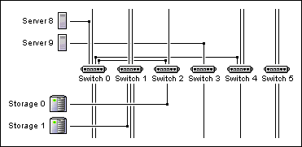
If each tier is laid out along a line, the link access points form a regular pattern (for example, uniformly dispersed within a rectangle), and each access point is guaranteed to appear without colliding with other lines or access points. The result is a usable and clean look, even in the case of full connectivity.
Multipathed TopologiesIn some applications, there can be many paths between two objects. In such cases, the topology is said to be multipathed. For example, in a SAN topology, imagine tracing two connections that exit a host, with each connection going through a different switch, only to end up at the same storage array. Here is an example:
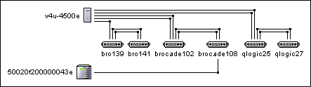
 Multipathed topologies are a representational challenge in that it can be difficult for users to find all the paths in a topology view, let alone notice that multiple paths exist. To assist users in identifying and tracing these paths, consider using filtering techniques or the methods described in 10.7 Methods for Integration With Primary Navigation. In particular, consider providing functionality enabling users to show all the paths between a single origination point and a single target point in one small display (see 10.7.2 Showing Paths from a Selected Object).
Multipathed topologies are a representational challenge in that it can be difficult for users to find all the paths in a topology view, let alone notice that multiple paths exist. To assist users in identifying and tracing these paths, consider using filtering techniques or the methods described in 10.7 Methods for Integration With Primary Navigation. In particular, consider providing functionality enabling users to show all the paths between a single origination point and a single target point in one small display (see 10.7.2 Showing Paths from a Selected Object).
Depending upon the specific attributes of a topology view, any number of graphical representations are available. This section provides guidelines for selecting a topology representation. Examples are included. Guidelines for displaying these representations are described in 10.4 View Elements. In particular, many details are provided for aggregation (see 10.4.6 Showing Aggregate Objects and 10.4.7 Showing Aggregate Connections) and filtering (see 10.4.5 Showing Filtered Views).
Note that in this section and those that follow, many examples of topology views are provided. These examples were created to illustrate the accompanying guidelines and may not realistically represent the status of alarms in managed objects and their connections.
 When the topology contains a small number of objects all in a single tier, use a mileage map graph.
When the topology contains a small number of objects all in a single tier, use a mileage map graph.
A mileage map graph is formed when objects line up along a diagonal and a connection shows as a single-bend, right-angled line. Even for low connectivity, a mileage map can make connections in a topology clear for these small-scale uses. See the design examples that follow.
 As the number of objects increases, use aggregation, filtering, or both, to reduce the representations into moderate-sized displays. If aggregation is used, the placement of the aggregation controls requires that the objects in the topology be aligned in a single vertical column rather than along a diagonal.
As the number of objects increases, use aggregation, filtering, or both, to reduce the representations into moderate-sized displays. If aggregation is used, the placement of the aggregation controls requires that the objects in the topology be aligned in a single vertical column rather than along a diagonal.
For definitions of aggregation and filtering, see 10.2.1 Handling Scale Gracefully.
Design ExamplesSmall Scale per Tier -- Mileage Map Graph: 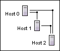
Moderate Scale per Tier (20<N per Tier<100) -- Mileage Map Graph With Aggregation:
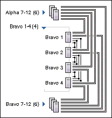
Large Scale per Tier (100<N per Tier) -- Mileage Map Graph With Nested Aggregation:
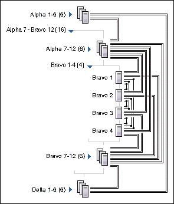
 With a two-tier topology, use a rectangular graph with objects in each tier aligned vertically and horizontally to form row and column heads. Right-angled bent lines are then used to show each connection.
With a two-tier topology, use a rectangular graph with objects in each tier aligned vertically and horizontally to form row and column heads. Right-angled bent lines are then used to show each connection.
See the design examples that follow.
 As the number of objects increases, use aggregation, filtering, or both, to reduce the representations into moderate-sized displays. Large numbers of objects might require the use of nested aggregation to reduce representations to a manageable size.
As the number of objects increases, use aggregation, filtering, or both, to reduce the representations into moderate-sized displays. Large numbers of objects might require the use of nested aggregation to reduce representations to a manageable size.
For definitions of aggregation and filtering, see 10.2.1 Handling Scale Gracefully.
 When one or both tiers have connections within themselves, show them using double right-angle bend lines, as illustrated in the example in 10.3.2.4 Guidelines for Representing Within-Tier Connections.
When one or both tiers have connections within themselves, show them using double right-angle bend lines, as illustrated in the example in 10.3.2.4 Guidelines for Representing Within-Tier Connections.
 When the topology contains a large number of within-tier connections, use a series of views that show only the between-tier connections in one view, and the within-tier connections on subsequent views.
When the topology contains a large number of within-tier connections, use a series of views that show only the between-tier connections in one view, and the within-tier connections on subsequent views.
Small Scale per Tier -- Rectangular Graph:
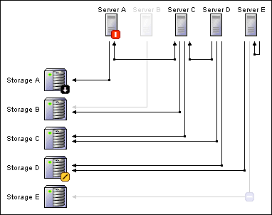
Moderate Scale per Tier (20<N per Tier<100) -- Rectangular Graph With Aggregation:

Large Scale per Tier (100<N per Tier) -- Rectangular Graph With Nested Aggregation:
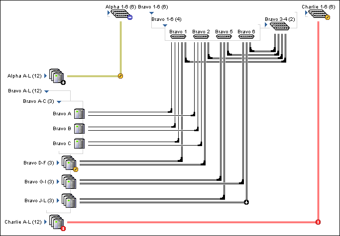
 For a three-tier topology, use a rectangular graph with objects in each tier aligned in orientations that alternate between horizontal and vertical. Right-angled bent lines are then used to show each connection.
For a three-tier topology, use a rectangular graph with objects in each tier aligned in orientations that alternate between horizontal and vertical. Right-angled bent lines are then used to show each connection.
See the design examples that follow.
 As the number of objects increases, use aggregation, filtering, or both, to reduce the representations into moderate-sized displays. Large number of objects might require the use of nested aggregation to reduce representations to a manageable size.
As the number of objects increases, use aggregation, filtering, or both, to reduce the representations into moderate-sized displays. Large number of objects might require the use of nested aggregation to reduce representations to a manageable size.
For definitions of aggregation and filtering, see 10.2.1 Handling Scale Gracefully.
 When one or both tiers have connections within themselves, show them using double right-angle bend lines, as illustrated in the example in 10.3.2.4 Guidelines for Representing Within-Tier Connections.
When one or both tiers have connections within themselves, show them using double right-angle bend lines, as illustrated in the example in 10.3.2.4 Guidelines for Representing Within-Tier Connections.
 When the topology contains a large number of tiers or any within-tier connections, use a series of filtered views, each of which shows only a pair of tiers, or shows the within-tier connections for a single tier.
When the topology contains a large number of tiers or any within-tier connections, use a series of filtered views, each of which shows only a pair of tiers, or shows the within-tier connections for a single tier.
Small Scale per Tier -- Rectangular Graph:
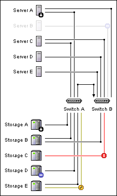
Moderate Scale per Tier (20<N per Tier<100) -- Rectangular Graph With Aggregation:
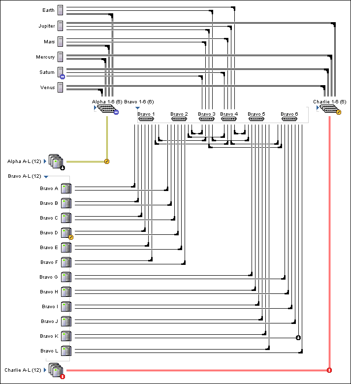
Large Scale per Tier (100<N per Tier) -- Rectangular Graph With Nested Aggregation:
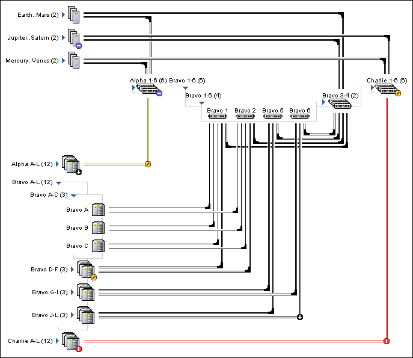
 For low connectivity and small-scale topologies, add within-tier connections to the preceding designs as a collection of double right-angle bend lines, as illustrated here for a tier of switches:
For low connectivity and small-scale topologies, add within-tier connections to the preceding designs as a collection of double right-angle bend lines, as illustrated here for a tier of switches:
 In large-scale topologies, you might need to present a collection of separate or filtered views to represent within-tier connections.
In large-scale topologies, you might need to present a collection of separate or filtered views to represent within-tier connections.
For example, one view might show only between-tier connections (for example, just hosts and storage arrays abstracted over switches). Another view might only show within-tier connections (for example, either hosts and switches, or switches and storage arrays). This solution might help to alleviate the scalability problem.
Except where noted, the display guidelines in this section pertain to all topologies regardless of scale. Specific guidelines for the small-, moderate-, and large-scale topologies described in 10.3.2 Guidelines for Choosing a Topology Representation are listed in 10.5 Layout Guidelines for Topologies.
 Draw topology objects using an icon and a text label. Here is an example:
Draw topology objects using an icon and a text label. Here is an example:
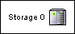
 In
the topology view, use standard 24 x 24 pixel or 32 x 32 pixel system management
object icons from the Icon Repository (available from graphics.zip).
In
the topology view, use standard 24 x 24 pixel or 32 x 32 pixel system management
object icons from the Icon Repository (available from graphics.zip).
As in other parts of the application interface, the topology view should use standard icons. This guideline applies to managed objects such as hosts, storage arrays, and switches, as well as the standard alarm icons.
 If
the Icon Repository does not include a standard icon for one or more of the
objects managed by your application, then you may create your own. See 1.4 Resources for Application Designers for more information about getting these icons reviewed.
If
the Icon Repository does not include a standard icon for one or more of the
objects managed by your application, then you may create your own. See 1.4 Resources for Application Designers for more information about getting these icons reviewed.
 Which icon size to use depends on the number of objects you need to fit on the page at a given time. If the topology contains few objects and page real estate can be spared, then the larger, 32-pixel icons are more appropriate. If page real estate is tight and the topology contains few connections, consider using the smaller, 24-pixel size.
Which icon size to use depends on the number of objects you need to fit on the page at a given time. If the topology contains few objects and page real estate can be spared, then the larger, 32-pixel icons are more appropriate. If page real estate is tight and the topology contains few connections, consider using the smaller, 24-pixel size.
Data from various surveys recently conducted with system administrators indicate that the most common screen resolution is 1024 x 768 pixels. Before settling on a final icon size, display the topology view at this resolution within a typical page in your application. If you are using the large icon size and only about 25 percent of the topology can be viewed at a given time, then use the smaller icon size. If you are already using the smaller icon size and this happens, then consider using either aggregation (see 10.4.6 Showing Aggregate Objects) or filtering (see 10.4.5 Showing Filtered Views) to reduce the size of the topology view.
 Use object icons consistently throughout your application.
Use object icons consistently throughout your application.
 For text labels:
For text labels:
 Base the ordering of the objects in the topology view on the relationships between objects and on the tasks users are expected to perform in the topology.
Base the ordering of the objects in the topology view on the relationships between objects and on the tasks users are expected to perform in the topology.
In many cases, an alphabetical ordering is most appropriate. An alphabetical ordering is usually most appropriate because its familiarity and predictability allow users to find objects relatively quickly. Whatever the ordering, display the objects consistently. In other words, when the topology view is refreshed or a new view is displayed, maintain the ordering scheme.
 Draw a connection between two objects (or from an object to itself) to indicate a relationship between objects.
Draw a connection between two objects (or from an object to itself) to indicate a relationship between objects.
 Draw connections using 1-pixel wide horizontal and vertical line segments connected at right angles.
Draw connections using 1-pixel wide horizontal and vertical line segments connected at right angles.
 Draw unbadged connections in the color Black. Badged connections are drawn using the badge color, as shown in 10.4.3 Showing Alarm States.
Draw unbadged connections in the color Black. Badged connections are drawn using the badge color, as shown in 10.4.3 Showing Alarm States.
 If the user can select a connection, then the connection should have an 8-pixel exaggerated corner icon, called a link access point, where the line bends. If interactivity is not supported, then the connection should have a small 3 x 3 pixel square that appears where the line bends. Connection corners are drawn in the same color as the connection lines.
If the user can select a connection, then the connection should have an 8-pixel exaggerated corner icon, called a link access point, where the line bends. If interactivity is not supported, then the connection should have a small 3 x 3 pixel square that appears where the line bends. Connection corners are drawn in the same color as the connection lines.
| Non-Selectable Connections | Selectable Connections |
|---|---|
| 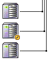 | 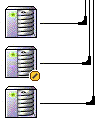 |
 When connection lines cross over one another, insert one white pixel on each side of one line at the crossing to indicate that the lines do not connect (see image that follows).
When connection lines cross over one another, insert one white pixel on each side of one line at the crossing to indicate that the lines do not connect (see image that follows).
 For further clarity, connection lines may fade to white before crossing under another connection line.
For further clarity, connection lines may fade to white before crossing under another connection line.
 A relationship between an object and itself may be drawn as a within-object connection in the topology view. For example, two ports on the same switch are sometimes connected to each other. Draw within-object connections with a single link access point, badge, or corner square at the most northwest connection bend.
A relationship between an object and itself may be drawn as a within-object connection in the topology view. For example, two ports on the same switch are sometimes connected to each other. Draw within-object connections with a single link access point, badge, or corner square at the most northwest connection bend.
| Crossing Connections Detail | Within-tier Connection | Within-object Connection |
|---|---|---|
| 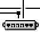 | 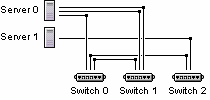 | 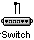 |
 Use the standard alarm badge icons to represent alarm states in the topology view.
Use the standard alarm badge icons to represent alarm states in the topology view.
 When placing an alarm badge on an object, superimpose the appropriate 10 x 10 pixel alarm icon in the lower right-hand corner of the object icon. Badges should extend 3 pixels to the right and below the object icon. See 16.1.2 Alarm Severity for more details on allowable alarm badges.
When placing an alarm badge on an object, superimpose the appropriate 10 x 10 pixel alarm icon in the lower right-hand corner of the object icon. Badges should extend 3 pixels to the right and below the object icon. See 16.1.2 Alarm Severity for more details on allowable alarm badges.
 When badging connections, display the connection line in the color associated with the alarm icon and place the appropriate 10 x 10 pixel alarm icon at the bend in the line. For connections with multiple bends, place the alarm icon at the most northwest bend only.
When badging connections, display the connection line in the color associated with the alarm icon and place the appropriate 10 x 10 pixel alarm icon at the bend in the line. For connections with multiple bends, place the alarm icon at the most northwest bend only.
The standard alarm icons can be found in 16.1.2 Alarm Severity. Here is an example of a portion of a topology with objects in three different alarm states:
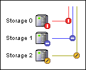
 In cases where the direction of relationships between objects is important (for all or some displayed relationships), place arrowheads at the appropriate ends of the connection lines.
In cases where the direction of relationships between objects is important (for all or some displayed relationships), place arrowheads at the appropriate ends of the connection lines.
Place a small arrowhead at one end of a connection to indicate that the connection is directed toward the object. If differentiation between undirected, directed, and bidirectional connections is needed, place arrowheads at both ends of a connection to indicate a bidirectional relationship. Draw arrowheads flush with the end of a connection line.
 Display 5 x 6 pixel arrowheads in the same color as the connection lines, as shown here:
Display 5 x 6 pixel arrowheads in the same color as the connection lines, as shown here:
| Directed Connections | Bidirectional Connections | Arrowhead Detail |
|---|---|---|
| 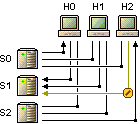 | 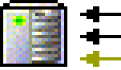 |
Filtering allows users to specify and view a desired subset of all the objects that could potentially be displayed in the topology. The use of filtering is one way of dealing with scalability issues.
 If the topology view supports filtering, use one of two ways to present the filtered view to users:
If the topology view supports filtering, use one of two ways to present the filtered view to users:
Here are three examples of the same small topology, the first without any filters, the second with exclusive filtering, and the third with filtering in context:
| No Filters | Exclusive Filtering | Filtering in Context |
|---|---|---|
| 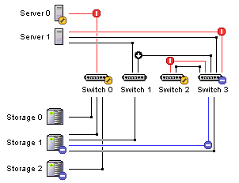 | 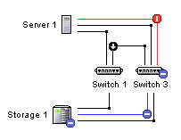 | 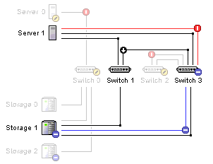 |
 When using filtering in context, follow these guidelines:
When using filtering in context, follow these guidelines:
Moderate- and large-scale topologies achieve increased scaling through the use of object aggregation. Object aggregation entails combining several related objects (in the same tier) into a single aggregate object, which can be opened and closed by a user.
Depending upon the application, object aggregates can have two meanings:
 Draw a closed aggregate object with an aggregate icon, a text label, and a closed turner glyph.
Draw a closed aggregate object with an aggregate icon, a text label, and a closed turner glyph.
 Draw an open aggregate object with a text label, an open turner glyph, and a series of indented, grouped objects displayed with singular-object icons.
Draw an open aggregate object with a text label, an open turner glyph, and a series of indented, grouped objects displayed with singular-object icons.
 Draw an aggregate icon as a series of three object icons stacked on top of each from upper left to lower right, offset by 4 pixels horizontally and vertically.
Draw an aggregate icon as a series of three object icons stacked on top of each from upper left to lower right, offset by 4 pixels horizontally and vertically.
 In the aggregate object label, include the number of objects represented by the aggregate object in parentheses at the end of the label.
In the aggregate object label, include the number of objects represented by the aggregate object in parentheses at the end of the label.
 Wherever possible, in the aggregate object label, indicate to the user which objects are represented by the aggregate object.
Wherever possible, in the aggregate object label, indicate to the user which objects are represented by the aggregate object.
For objects with similar names, say Bravo 1, Bravo 2, Bravo 3, and so on, the aggregate object label could combine the names together meaningfully, say Bravo 1-6.
 Draw turner glyphs to indicate the state (open or closed) of an aggregate object.
Draw turner glyphs to indicate the state (open or closed) of an aggregate object.
| Open Turner | Closed Turner for Vertical Tier | Closed Turner for Horizontal Tier |
|---|---|---|
 Draw grouping lines around open aggregate objects with a 2-pixel wide by 1-pixel tall light purple line.
Draw grouping lines around open aggregate objects with a 2-pixel wide by 1-pixel tall light purple line.
 Draw a badge on an aggregate icon that shows the most severe badge of the objects represented by the aggregate object.
Draw a badge on an aggregate icon that shows the most severe badge of the objects represented by the aggregate object.
Here are examples of objects that have been aggregated across both the horizontal and vertical planes:
| Closed Aggregate Objects | Open Aggregate Objects | |
|---|---|---|
| Horizontal Tier | 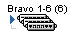 | 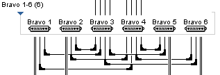 |
| Vertical Tier | 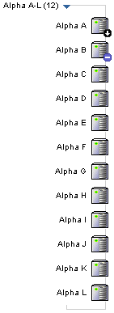 |
Moderate- and large-scale topologies achieve increased scaling through the use of object aggregation. Aggregates of multiple objects also result in aggregate connections. These aggregate connections represent one or more connections between objects enclosed in an aggregate object. The following guidelines differentiate aggregate connections from nonaggregate connections.
 Draw aggregate connections using two 1-pixel wide lines spaced 1 pixel apart.
Draw aggregate connections using two 1-pixel wide lines spaced 1 pixel apart.
 Draw a badge on an aggregate connection that shows the most severe badge of the connections represented by the aggregate connection.
Draw a badge on an aggregate connection that shows the most severe badge of the connections represented by the aggregate connection.
 If an aggregate connection represents directed connections, draw directional arrows on the aggregate connection in the direction or directions of the represented connections.
If an aggregate connection represents directed connections, draw directional arrows on the aggregate connection in the direction or directions of the represented connections.
Here is an example of a topology view showing aggregate connections:
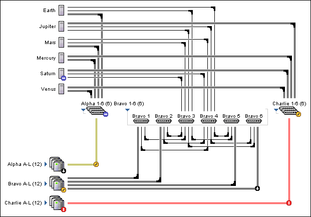
 If an aggregate connection is selectable, place a 9-pixel link access point at the inside bends of connection lines.
If an aggregate connection is selectable, place a 9-pixel link access point at the inside bends of connection lines.
| NonSelectable Aggregate Connections | Selectable Aggregate Connections |
|---|---|
| 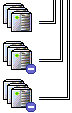 | 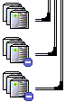 |
The age of the data shown in a topology can be critically important if the topology shows alarms and is being used for troubleshooting. This information can also be useful if the topology is being printed for archiving or reference purposes.
 Show a timestamp if the topology can contain alarm information.
Show a timestamp if the topology can contain alarm information.
 If shown, the timestamp should appear in the status area of the masthead if a main window masthead is used (see 4.1 Main Window Masthead for more information). Otherwise, the timestamp should appear left-aligned and above the topology. Here is an example of a timestamp in the masthead:
If shown, the timestamp should appear in the status area of the masthead if a main window masthead is used (see 4.1 Main Window Masthead for more information). Otherwise, the timestamp should appear left-aligned and above the topology. Here is an example of a timestamp in the masthead:
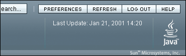
 If shown outside of the masthead, the timestamp should appear in a smaller font using the appropriate localized version (see Chapter 7 Simple Elements).
If shown outside of the masthead, the timestamp should appear in a smaller font using the appropriate localized version (see Chapter 7 Simple Elements).
Given the various types of objects and representations that can appear in a topology, consider providing an icon legend that describes what each icon means. Such a legend would help users to more quickly understand what the topology is showing them.
 The icon legend should
The icon legend should appear in a chromeless secondary-content page that is popped-up when the user clicks a link labeled "  Show Legend". This link should be left-aligned beneath the content page title and above the topology view itself.
Show Legend". This link should be left-aligned beneath the content page title and above the topology view itself.
 In the legend show each object and alarm icon used in the topology. Include a brief description to the right of each icon.
In the legend show each object and alarm icon used in the topology. Include a brief description to the right of each icon.
Sometimes, the objects in the topology have subcomponents that would be useful to also represent in the topology (for example, network adapters in a server). However, showing these subcomponents in the topology can add significant visual clutter, making it more difficult to understand what is being shown.
 You may show the subcomponents under these conditions:
You may show the subcomponents under these conditions:
 Show the subcomponents on-demand in a separate view under these conditions:
Show the subcomponents on-demand in a separate view under these conditions:
On-demand in a separate view means that clicking on an object will open an exploded view of the object in a secondary-content page or in the same window after a page swap.
Although the design details for showing subcomponents is not finalized, here is an example of one possible design:
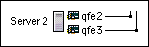
The guidelines in this section apply to all topologies regardless of scale. Additional guidelines for small-, medium-, and large-scale topologies are provided in separate sections that follow.
 Use the following spacing guidelines for all topologies:
Use the following spacing guidelines for all topologies:
The size of an object is determined by its icon, text label, and connections. Thus, object icons may be spaced more than 5 pixels apart if the connection lines or text label are wider (or taller) than the object icon.
These layout guidelines are visually depicted in the following example:
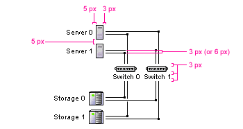
The display guidelines in this section pertain to the small-scale topologies in which the topology view displays relatively few objects. These topologies are described in 10.3.2 Guidelines for Choosing a Topology Representation.
 For one-tier small-scale topologies:
For one-tier small-scale topologies:
 For two-tier small-scale topologies:
For two-tier small-scale topologies:
 For three-tier small-scale topologies:
For three-tier small-scale topologies:
Here are examples of one-, two-, and three-tier topology views following these guidelines:
| One-Tier Layout | Two-Tier Layout | Three-Tier Layout |
|---|---|---|
| 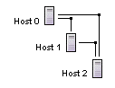 | 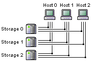 | 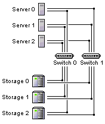 |
 For two-tier and three-tier small-scale topologies, draw within-tier and within-object connections with three line segments that form right angles to the objects. Draw these connections on the opposite side of the object icon from the text label. For the two segments perpendicular to the icon use lines of at least 10 pixels in length.
For two-tier and three-tier small-scale topologies, draw within-tier and within-object connections with three line segments that form right angles to the objects. Draw these connections on the opposite side of the object icon from the text label. For the two segments perpendicular to the icon use lines of at least 10 pixels in length.
| Within-tier Connections | Within-object Connections |
|---|---|
The display guidelines in this section pertain to the moderate-scale topologies in which the topology view displays a moderate number of objects. These topologies are described in 10.3.2 Guidelines for Choosing a Topology Representation.
 For moderate-scale topologies:
For moderate-scale topologies:
 For open aggregates:
For open aggregates:
 For one-tier moderate-scale topologies, display objects in a single column with all connections drawn as three segment within-tier connections.
For one-tier moderate-scale topologies, display objects in a single column with all connections drawn as three segment within-tier connections.
Here is an example of a moderate-scale topology with aggregation:
The display guidelines in this section pertain to the large-scale topologies in which the topology view displays many objects. These topologies are described in 10.3.2 Guidelines for Choosing a Topology Representation.
 For large-scale topologies, use the layout rules for moderate-scale topologies with nested aggregate objects to obtain increased scalability.
For large-scale topologies, use the layout rules for moderate-scale topologies with nested aggregate objects to obtain increased scalability.
Here is an example of a large-scale topology with nested aggregation. Along the vertical tier for storage arrays, "Bravo A-L" is open on the top level with four aggregates inside of it. At the next level down, "Bravo A-C" is open with three storage array instances inside of it. Along the horizontal tier for switches, "Bravo 1-6" is open at the top level with two aggregates inside of it. At the next level down, "Bravo 1-6" is open with four switch instances inside of it.
The topology design effort thus far has focused on topology views for monitoring the status of, and viewing the relationships among, objects rather than topology views intended for configuring objects and their relationships. As a result, these guidelines do not cover topics such as drag-and-drop style interactivity. The level of interactivity covered here is limited to moving the mouse over objects, selecting objects, viewing contextual menus, and expanding or collapsing aggregates.
 When the user moves the mouse over an object or active link access points, a tool tip that provides information about the identity, status, or both, of that object should appear.
When the user moves the mouse over an object or active link access points, a tool tip that provides information about the identity, status, or both, of that object should appear.
 The tool tips provided in mouse-over feedback must conform to the guidelines in 11.5 Tool Tips.
The tool tips provided in mouse-over feedback must conform to the guidelines in 11.5 Tool Tips.
 If the application supports users getting information about the connections between objects, the "live" mouse-over zones that cause the tool tip to appear should extend 2 pixels beyond either side of the line itself. Because the line is only 1-pixel wide, the additional "live" area makes the line an easier target to hit.
If the application supports users getting information about the connections between objects, the "live" mouse-over zones that cause the tool tip to appear should extend 2 pixels beyond either side of the line itself. Because the line is only 1-pixel wide, the additional "live" area makes the line an easier target to hit.
 Consider including the following information in the tool tip:
Consider including the following information in the tool tip:
 Do not include instructions such as "Click to Open" in a tool tip pertaining to an object within the topology.
Do not include instructions such as "Click to Open" in a tool tip pertaining to an object within the topology.
 An object's behavior when the user selects it depends on the application. In cases where the topology viewer is designed for monitoring or viewing relationships, selecting an object can do one of the following:
An object's behavior when the user selects it depends on the application. In cases where the topology viewer is designed for monitoring or viewing relationships, selecting an object can do one of the following:
 To meet accessibility requirements, enable users to navigate through and select objects using the keyboard rather than the mouse. For more information, see Appendix D - Accessibility
To meet accessibility requirements, enable users to navigate through and select objects using the keyboard rather than the mouse. For more information, see Appendix D - Accessibility
If this option is not possible using your implementation of the topology viewer, then the application must provide a keyboard-navigable alternative representation of the information contained in the topology view. For example, the information could be presented in a table. Even if keyboard navigation is possible, a table might be a more usable method of interacting with the topology. In addition, the methods described in 10.7 Methods for Integration with Primary Navigation might be usable for people with disabilities.
The current implementation only supports single selection. Methods for handling multiple selection requires more investigation. See 10.8 Issues For Future Investigation for more details.
Being able to act directly on an object displayed in a topology is an important benefit of a graphical user interface (GUI). In the case of a topology view, users might see that a particular object is showing a critical alarm and want to immediately run a diagnostic test on the object to isolate the problem. One way to accomplish this task would be to allow users to click on the object to open up a contextual menu. The menu would display a list of available actions that can be performed on the object. Here is an example of a contextual menu inside of a topology view:
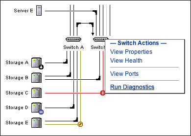
In this example, the user has clicked on "Switch B" to reveal a contextual menu. The menu has four actions, the last action is "Run Diagnostics."
 Contextual menus must conform to the following design guidelines:
Contextual menus must conform to the following design guidelines:
The several possible clickable regions in a topology view include:
 The guidelines for what happens when a user clicks on a managed object depend on a number of factors. Here are the guidelines for aggregates. Note that when an aggregate supports user interaction and contains roll-up of information about the objects inside of it, it is called a first-class object. Also note that clicking on the turner always expands or collapses the aggregate.
The guidelines for what happens when a user clicks on a managed object depend on a number of factors. Here are the guidelines for aggregates. Note that when an aggregate supports user interaction and contains roll-up of information about the objects inside of it, it is called a first-class object. Also note that clicking on the turner always expands or collapses the aggregate.
Here are the guidelines for non-aggregates or singular objects:
Some system management applications may manage connections as first-class objects. In such applications, users can interact with connections to view various properties including health, throughput, and so forth. If the application supports it, the link access points for connections may also contain alarm badges. Here are the guidelines for clickable regions associated with connections:
The notion of an aggregate has already been discussed several times in this chapter (see sections 10.2.1, 10.3.2, 10.4.6, and 10.5). This section discusses the guidelines for expanding and collapsing aggregates.
 Clicking on a closed turner () opens an aggregate.
Clicking on a closed turner () opens an aggregate.
 Clicking on an open turner () closes the aggregate.
Clicking on an open turner () closes the aggregate.
 The state of a topology view must be remembered within a user session. That is, if a user navigates to another page and then returns to the topology view, the application should remember the state of any expanded aggregates.
The state of a topology view must be remembered within a user session. That is, if a user navigates to another page and then returns to the topology view, the application should remember the state of any expanded aggregates.
 If you want to provide an action to expand the entire topology or just a single tier (for example, for printing on a plotter), provide page actions such as "Show Entire Topology" or "Show All Storage Arrays." For more information on page actions, see 6.5 Content Area Actions. Here is an example:
If you want to provide an action to expand the entire topology or just a single tier (for example, for printing on a plotter), provide page actions such as "Show Entire Topology" or "Show All Storage Arrays." For more information on page actions, see 6.5 Content Area Actions. Here is an example:
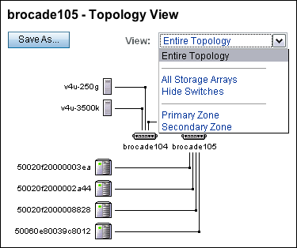
Some users might want to take snapshots of a topology at a point in time either for reference or for comparison.
 If this functionality is desired, provide a page action, such as "Save As..." as shown in the preceding example. For more information on page actions, see 6.5 Content Area Actions.
If this functionality is desired, provide a page action, such as "Save As..." as shown in the preceding example. For more information on page actions, see 6.5 Content Area Actions.
 The saved topology must include a timestamp showing when the topology was generated as well as a legend showing the meaning of all the displayed elements (object icons, alarm badges, link access points, connection types, filtered elements, and so forth).
The saved topology must include a timestamp showing when the topology was generated as well as a legend showing the meaning of all the displayed elements (object icons, alarm badges, link access points, connection types, filtered elements, and so forth).
While users may be able to navigate through a topology to find and select managed objects, many applications provide other methods for doing so. These methods include, but are not limited to, asset inventories and alarm logs. To fully support a variety of user tasks, it is often useful to integrate topology views with these other methods of navigation. This section describes two methods of integration. In most cases, these methods assume that the user has already navigated to and selected a specific object and now wishes to view the interrelationships among the selected object and other objects in the overall topology.
Because these methods often presuppose that a user is interested in only viewing a small subsection of the entire topology, they are also helpful in dealing with large-scale deployments. These subsections or subtopologies typically show objects that are directly connected to a selected object or the entire set of paths from one object to another.
A user with access to this method of displaying a topology view would typically perform the following actions:
Here is an example of a user who has navigated through a table with lists of objects and is about to perform the Show Connectivity action:
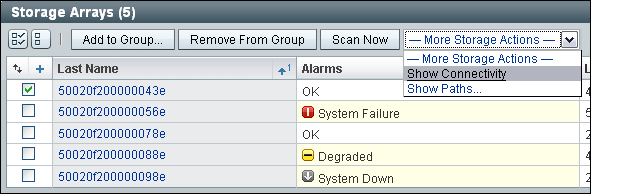
After the action is performed, the application would return a subtopology showing only the managed objects that are directly connected to the selected object. Here is an example:
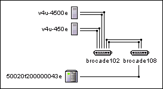
A user with access to this method of displaying a topology view would typically perform the following actions:
Here is an example of a user who has navigated through a table with lists of objects, selected an object, and is about to open the Show Paths wizard:
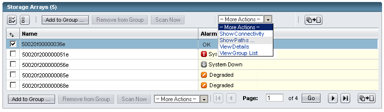
The Show Paths wizard provides the user with the means of selecting the target. Selecting the target may be done in a number of ways, such as a drill down through a tree or a direct search (see Chapter 12 Search for more details).
After the user has selected the target, the application would return a subtopology showing all the paths between the source object and the target object. Here is an example:
Certain applications could provide users with an option to see partial paths between two objects. Doing so allows users to ask questions such as: "What do I need to do to connect Host A to Storage B?" In such cases, a drop-down menu may be used to permit the user to select between partial and full paths. In the above example, the partial paths from the server to the storage include switches bro139, bro141, qlogic25, and qlogic27.
The following open issues might be investigated in the future:
| Privacy Policy | Terms of Use | Trademarks | Copyright 2007 Sun Microsystems, Inc. |